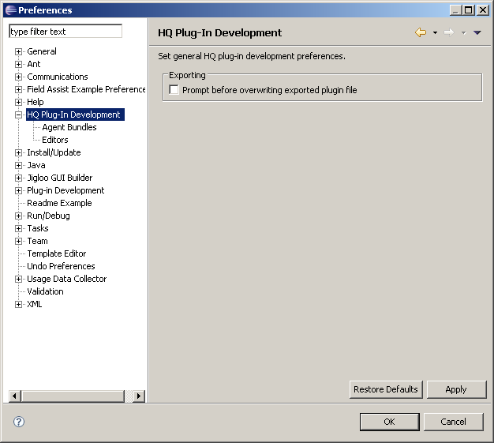
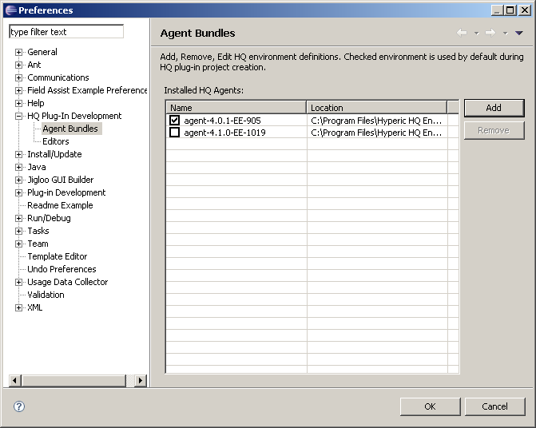
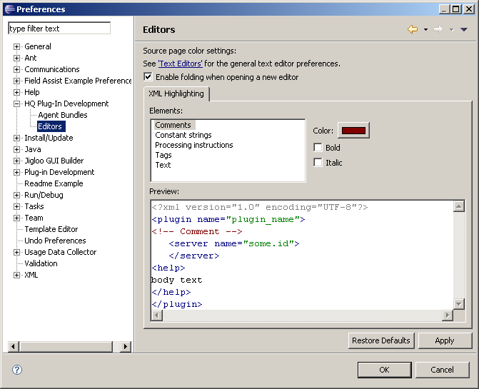

There is some global preferences which are shared among every HQ plug-in project.
Main preferences page contain general settings for Hypclipse plug-in.
Most important one is a local location of installed HQ agents. Since these agents contains needed libraries for successful custom plug-in compilation, location of these agent bundles are stored within eclipse preferences framework. These bundle locations are then referenced within individual project to found needed classes.
Various editor settings can be changed.
